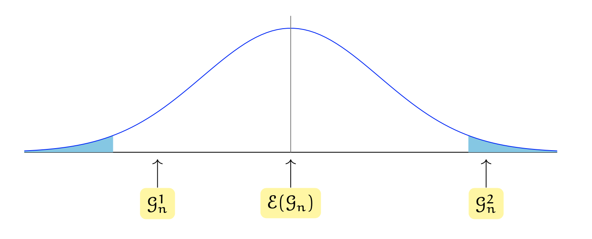

Significatività statistica#
Il test di ipotesi è un metodo ampiamente utilizzato nella ricerca per fare inferenze sui parametri della popolazione basandosi sui dati campionari. Nel contesto della psicologia, questo metodo è spesso impiegato per valutare l’efficacia di interventi psicologici, confrontare diverse teorie o approcci, esplorare le influenze di variabili psicologiche su comportamenti e processi cognitivi, e comprendere meglio i meccanismi sottostanti a fenomeni psicologici complessi come l’apprendimento, la memoria e le emozioni.
In questo capitolo, ci concentreremo sul test di ipotesi frequentista, una procedura ancora comunemente utilizzata. Tuttavia, è fondamentale sottolineare che la comunità statistica sconsiglia l’uso esclusivo del test di ipotesi frequentista come criterio decisionale per stabilire la validità di un risultato sperimentale.
Tradizionalmente, un risultato è considerato «statisticamente significativo» se è improbabile che sia dovuto al caso, suggerendo che il risultato sia stabile o reale. Al contrario, i risultati «non significativi» vengono spesso etichettati come rumorosi e visti con scetticismo. Questa visione semplificata della significatività statistica può portare a fraintendimenti e conclusioni errate.
Analizzeremo come l’approccio frequentista, in pratica, non mantenga sempre la sua «promessa» e come l’uso della procedura della significatività statistica, nella pratica scientifica, possa spesso produrre risultati opposti a quelli desiderati. La significatività statistica dipende fortemente dalle dimensioni del campione e da altri fattori. Un risultato non significativo non implica necessariamente che l’effetto osservato sia nullo o irrilevante. Inoltre, la significatività statistica può essere influenzata dalla scelta dei livelli di confidenza e dai test statistici utilizzati, portando a interpretazioni soggettive dei risultati che possono essere fuorvianti.
Pertanto, anziché concentrarsi esclusivamente sulla significatività statistica, è preferibile valutare l’effetto osservato nel contesto scientifico più ampio e alla luce dei risultati di altre analisi, utilizzando un approccio più completo e critico.
Infine, in questo capitolo esamineremo il caso specifico della media del campione come stimatore della media della popolazione, esplorando i suoi limiti e le sue applicazioni nella statistica inferenziale di tipo frequentista.
Preparazione del Notebook#
import numpy as np
import scipy.stats as stats
from scipy.stats import binom, geom
from scipy.special import comb
import pymc as pm
import arviz as az
import xarray as xr
import scipy.stats as stats
import warnings
warnings.filterwarnings("ignore")
Il Test di Ipotesi#
Il test di ipotesi è un metodo statistico utilizzato per valutare se i dati sono coerenti con l’ipotesi nulla (\(H_0\)). L’ipotesi nulla solitamente afferma che non vi è alcun effetto o differenza significativa, mentre l’ipotesi alternativa (\(H_1\)) rappresenta l’affermazione che si desidera testare. I dati del campione vengono analizzati per determinare se forniscono prove sufficienti per rifiutare l’ipotesi nulla. Un passaggio cruciale consiste nel calcolare il value-p.
La procedura di Test di Ipotesi#
Passo 1: Formulare l’ipotesi nulla (\(H_0\)) e l’ipotesi alternativa (\(H_1\)) basandosi sulla domanda di ricerca.
NOTA: Decidiamo un’ipotesi non direzionale (nota anche come ipotesi bilaterale) quando testiamo effetti in entrambe le direzioni (la più comune), altrimenti un’ipotesi direzionale (nota anche come ipotesi unilaterale).
Passo 2: Stabilire un livello di significatività, α (solitamente 0.05).
Passo 3: Selezionare il Test Statistico appropriato, verificare eventuali assunzioni e calcolare il test statistico.
NOTA: Esistono due tipi fondamentali di test statistici, parametrici e non parametrici. I test parametrici (ad esempio, t-test, ANOVA) dipendono da assunzioni sulla distribuzione del parametro studiato. I test non parametrici (ad esempio, test di Mann-Whitney U, test di Kruskal-Wallis) utilizzano un metodo di ordinamento delle misure e non richiedono tali assunzioni. Tuttavia, i test non parametrici sono tipicamente meno potenti dei test parametrici.
Passo 4: Decidere se il risultato è «statisticamente significativo» secondo (a) la regione di rifiuto o (b) il valore-p.
(a) L’approccio della regione di rifiuto. Basandosi sulla distribuzione campionaria nota del test statistico, la regione di rifiuto è un insieme di valori per il test statistico per i quali l’ipotesi nulla viene rifiutata. Se il valore osservato del test statistico rientra nella regione di rifiuto, allora si rifiuta l’ipotesi nulla.
(b) L’approccio del valore-p. Il valore-p è la probabilità di ottenere i risultati osservati, o risultati ancora più estremi, se l’ipotesi nulla è vera.
Confrontiamo il valore-p calcolato con il livello di significatività α:
Se il valore-p < α, si rifiuta l’ipotesi nulla (\(H_0\)).
Se il valore-p ≥ α, non si rifiuta l’ipotesi nulla (\(H_0\)).
Il Test di Ipotesi nel Contesto Frequentista#
Si noti che i metodi bayesiani e frequentisti non sono semplicemente due approcci diversi per rispondere alla stessa domanda, ma formulano domande fondamentalmente diverse. Pertanto, per comprendere il test di ipotesi frequentista, è essenziale chiarire cosa si intende per valore-p.
L’American Statistical Association (ASA) definisce il valore-p come:
the probability under a specified statistical model that a statistical summary of the data (e.g., the sample mean difference between two compared groups) would be equal to or more extreme than its observed value (Wasserstein e Lazar 2016).
Questa definizione può risultare difficile da comprendere perché contiene concetti complessi come «probabilità» e «modello statistico specificato». Per capire meglio cosa rappresenta un valore-p, è necessario esaminare attentamente entrambi questi concetti. Questo ci porterà anche a una comprensione più profonda di altri concetti fondamentali per l’inferenza frequentista e ci aiuterà a distinguere tra inferenza frequentista e inferenza bayesiana.
Una distinzione fondamentale tra l’approccio frequentista e quello bayesiano riguarda l’interpretazione della probabilità: il primo si basa sulla frequenza relativa degli eventi nel lungo periodo, mentre il secondo si basa sulla «certezza soggettiva» o sul grado di fiducia che un individuo attribuisce a un evento specifico.
Chiarito che la probabilità assume significati diversi nei contesti frequentista e bayesiano, possiamo chiederci quale nozione di probabilità sia implicita nella definizione del valore-p fornita dall’ASA. La visione comune suggerisce che si riferisca alle frequenze relative. Ma frequenze relative di cosa e ripetizioni di cosa?
Possiamo riformulare la definizione dell’ASA in questo modo:
Il valore-p si riferisce alla frequenza relativa di ottenere un riassunto statistico dei dati grande quanto o più grande del valore osservato in ripetizioni ipotetiche di un esperimento descritto da un modello statistico specificato.
Quindi, l’approccio frequentista può essere descritto come un metodo per stimare il valore di un parametro attraverso esperimenti ipotetici, confrontando i nostri dati con i risultati di tali esperimenti per giudicare se i nostri dati sono sorprendenti o meno.
Applicazione alla Media Campionaria#
In questo capitolo, esploreremo come applicare il processo del test di ipotesi frequentista alla media campionaria. Analizzeremo come utilizzare la media di un campione per fare inferenze sulla media della popolazione, discutendo i limiti e le applicazioni di questo approccio nell’inferenza statistica frequentista.
Per comprendere meglio il concetto di valori-p e l’applicazione della verifica del test di ipotesi, è utile ricorrere a delle simulazioni. Queste permettono di replicare condizioni sperimentali ipotetiche e osservare la variabilità dei risultati.
La Distribuzione della Media Campionaria#
Quando consideriamo la media campionaria come stima della media di una popolazione, assumiamo che questa popolazione segua una distribuzione normale. Vogliamo quindi esplorare la distribuzione della media campionaria (\(\bar{X}\)), che descrive la variazione di \(\bar{X}\) attraverso infiniti campioni di dimensione \(n\). Abbiamo già dimostrato che, se la popolazione è normalmente distribuita, anche la distribuzione campionaria di \(\bar{X}\) seguirà una distribuzione normale, con media \(\mu\) (la media della popolazione) e deviazione standard \(\frac{\sigma}{\sqrt{n}}\) (dove \(\sigma\) è la deviazione standard della popolazione e \(n\) è la dimensione del campione).
Test di Ipotesi sulla Media Campionaria#
Supponendo di conoscere \(\sigma\) ma non \(\mu\), utilizziamo i test di ipotesi per indagare quanto la media campionaria osservata si discosti da un valore ipotetico \(\mu_0\), specificato dall’ipotesi nulla. Questo processo ci permette di valutare la plausibilità di \(\mu_0\) come vera media della popolazione.
Calcolo della Statistica del Test#
Per valutare quanto la media campionaria osservata si discosti dall’ipotesi nulla che propone \(\mu = \mu_0\), standardizziamo \(\bar{X}\) usando la formula:
Questa trasformazione produce una variabile \(Z\) che segue una distribuzione normale standard \(\mathcal{N}(0, 1)\). Valori estremi di \(Z\) (sia molto grandi che molto piccoli) suggeriscono che la media campionaria osservata è incompatibile con \(\mu_0\), portando al rigetto dell’ipotesi nulla.
Simulazione#
Per illustrare quanto espresso sopra attraverso una simulazione, consideriamo un esempio numerico. Supponiamo che \(\mu_0 = 100\), \(\sigma = 15\) e \(n = 30\). Vogliamo calcolare il valore-p per l’evento \(\bar{X} > 105\).
La simulazione può essere eseguita come segue:
# To make the simulation reproducible
np.random.seed(123)
mu_0 = 100
sigma = 15
n = 30
n_sim = 10000 # Number of simulations
# Generate n_sim sample means from a N(mu_0, sigma/sqrt(n))
sample_means = np.random.normal(loc=mu_0, scale=sigma / np.sqrt(n), size=n_sim)
# Calculate the p-value as the proportion of sample means > 105
p_value = np.sum(sample_means > 105) / n_sim
# Print the p-value
print(p_value)
0.0348
Questo script simula la distribuzione campionaria di \(\bar{X}\) sotto l’ipotesi nulla che \(\mu = \mu_0\) e calcola il valore-p per l’evento \(\bar{X} > 105\). Il valore-p indica la probabilità di osservare un valore di \(\bar{X}\) così estremo (o più estremo) se l’ipotesi nulla fosse vera.
Il risultato della simulazione può essere confrontato con il calcolo teorico del valore-p usando la distribuzione normale standard. Il valore \(Z\) per \(\bar{X} = 120\) è calcolato come:
Possiamo usare la funzione stats.norm.sf() per trovare l’area sotto la curva normale standard a destra di questo valore \(Z\), che corrisponde al valore-p teorico.
Z = (105 - 100) / (15 / np.sqrt(30))
print(Z)
1.8257418583505538
# Calculate the upper tail probability
upper_tail_prob = stats.norm.sf(Z)
print(upper_tail_prob)
0.033944577430914495
Oppure, in maniera equivalente
upper_tail_prob = 1 - stats.norm.cdf(105, loc=100, scale=15 / np.sqrt(30))
print(upper_tail_prob)
0.0339445774309145
Il calcolo teorico mostra che il valore \(Z\) per una media campionaria di 105 è 1.82. Questo valore indica una deviazione sostanziale dalla media ipotizzata sotto l’ipotesi nulla (\(\mu_0 = 100\)). Tale deviazione può essere quantificata dalla «sorpresa» indicata dal valore-p, dove valori-p piccoli rappresentano una maggiore sorpresa. Il valore-p ottenuto, pari a 0.0339, indica un elevato grado di sorpresa: come mostrato dalla simulazione, un valore di 105 o superiore si verifica solo nel 3.4% dei casi se l’esperimento viene ripetuto numerose volte sotto l’ipotesi nulla. Questo suggerisce che un risultato del genere è altamente improbabile se l’ipotesi nulla fosse vera.
Applicazioni pratiche#
Nella precedente discussione, abbiamo supposto \(\sigma\) nota. Tuttavia, poiché di solito non conosciamo il valore di \(\sigma\) nella pratica, dobbiamo stimarlo utilizzando la deviazione standard campionaria \(s\). Pertanto, al posto di \(\sigma\), possiamo utilizzare \(s\), ottenendo così la statistica:
Si può dimostrare che la statistica \(T\) segue una distribuzione \(t\) di Student con \(n-1\) gradi di libertà se il campione casuale è stato estratto da una popolazione normale.
A questo punto, possiamo applicare la stessa logica descritta in precedenza e possiamom basarci sulla statistica \(T\) per testare un’ipotesi sulla media della popolazione. Utilizzando il valore critico appropriato dalla distribuzione \(t\) di Student con \(n-1\) gradi di libertà e un livello di significatività predefinito, possiamo determinare se i dati osservati supportano o respingono l’ipotesi nulla sulla media della popolazione.
Ipotesi statistiche#
Esaminiamo in maggior dettaglio la procedura di test di ipotesi statistiche nel contesto frequentista. Definiamo innanzitutto l’ipotesi statistica come una dichiarazione riguardante la distribuzione di probabilità di una variabile casuale. Tale ipotesi può riguardare la forma funzionale della distribuzione o i parametri che la caratterizzano.
In particolare, l’ipotesi che riguarda i parametri di una o più popolazioni viene denominata ipotesi nulla e viene rappresentata come \(H_0\). Per un parametro sconosciuto \(\theta\), l’ipotesi nulla viene formulata come:
dove \(\Theta_0\) è un sottoinsieme del dominio \(\Theta\), che rappresenta tutti i possibili valori del parametro \(\theta\) coerenti con il modello statistico adottato. L’ipotesi nulla può essere semplice se \(\Theta_0\) contiene un unico elemento, oppure composta se contiene più di un elemento.
I passi di un test di ipotesi#
Per prendere una decisione tra accettare o respingere l’ipotesi nulla, i frequentisti utilizzano un test statistico. Un test statistico frequentista ci permette di valutare se i dati osservati forniscono prove sufficienti per respingere o accettare un’ipotesi riguardante una proprietà di una popolazione di interesse e si può descrivere nel modo seguente.
Iniziamo formulando l’ipotesi nulla \(H_0\), che rappresenta un’affermazione specifica sulla popolazione. L’ipotesi alternativa \(H_1\) viene formulata come l’evento complementare rispetto all’evento specificato dall’ipotesi nulla. Successivamente, definiamo una statistica campionaria \(\mathcal{G}_n(X_1, \dots, X_n)\) che viene calcolata a partire dai dati campionari e che ha una distribuzione nota quando l’ipotesi nulla è vera.
Successivamente, suddividiamo l’insieme di tutte le possibili realizzazioni della statistica \(\mathcal{G}_n\) in due insiemi disgiunti: la «regione di accettazione» \(\mathcal{A}\) e la sua regione complementare, la «regione di rifiuto» \(\mathcal{R}\). La regione di accettazione rappresenta l’insieme dei valori che la statistica può assumere sotto l’ipotesi nulla, mentre la regione di rifiuto rappresenta l’insieme dei valori che la statistica può assumere se l’ipotesi nulla è falsa.
Infine, selezioniamo un livello di significatività \(\alpha\), che rappresenta la massima probabilità di respingere erroneamente l’ipotesi nulla quando questa è vera. Se l’osservazione della statistica \(\mathcal{G}_n\) rientra nella regione di accettazione, allora l’ipotesi nulla non viene respinta; altrimenti, viene respinta a favore dell’ipotesi alternativa.
In sintesi, il test statistico ci consente di stabilire se i dati osservati forniscono sufficienti evidenze per rifiutare l’ipotesi nulla a favore dell’ipotesi alternativa.
Ipotesi alternativa#
Durante un test di ipotesi, dopo aver definito l’ipotesi nulla \(H_0\), possono essere considerate diverse ipotesi alternative \(H_1\). Le ipotesi alternative più comuni si suddividono in tre tipi:
\(H_1: \theta \neq \theta_0\),
\(H_1: \theta > \theta_0\),
\(H_1: \theta < \theta_0\).
Queste corrispondono rispettivamente a un test bidirezionale, un test unilaterale superiore (o destro) e un test unilaterale inferiore (o sinistro).
La scelta dell’ipotesi alternativa determina la definizione della regione di rifiuto \(\mathcal{R}\) dell’ipotesi nulla \(H_0\). La regione di rifiuto rappresenta i valori estremi della distribuzione, nella direzione dell’ipotesi alternativa \(H_1\). Nel caso di un test unilaterale inferiore, \(\mathcal{R}\) si trova nella coda sinistra della distribuzione, nell’intervallo [\(-\infty\), \(\theta_0\)]. Nel caso di un test unilaterale superiore, \(\mathcal{R}\) si trova nella coda destra della distribuzione, nell’intervallo [\(\theta_0\), \(\infty\)].
I valori critici sono i valori che delimitano la regione di rifiuto \(\mathcal{R}\) in un test unilaterale e i valori che delimitano le regioni di rifiuto \(\mathcal{R}\) in un test bidirezionale. Il risultato di un test viene considerato statisticamente significativo se il valore della statistica del test si trova nella regione di rifiuto \(\mathcal{R}\).
Valore-p#
Il valore-p è definito come la probabilità che la statistica del test assuma un valore uguale o più estremo di quello osservato, considerando la distribuzione campionaria costruita assumendo come vera l’ipotesi nulla. La significatività statistica viene convenzionalmente definita come un valore-p inferiore a 0.05, indicando che l’evidenza osservata è improbabile da ottenere se l’ipotesi nulla è vera. Se il risultato osservato non raggiunge la significatività statistica, significa che la stima non è statisticamente significativa e che il valore osservato può essere spiegato da una semplice variazione casuale.
Un esempio motivante#
Per esplorare il concetto di significatività statistica, possiamo prendere in considerazione uno studio svolto da sul ruolo della musica nella trasmissione di messaggi sociali ai bambini. La musica è una forma d’arte presente in molte attività quotidiane e può trasmettere informazioni relative alla cultura e all’appartenenza sociale. Gli autori dello studio hanno voluto indagare se i bambini di soli 5 mesi avessero una preferenza per individui sconosciuti che cantavano loro una canzone familiare rispetto ad altri individui sconosciuti che cantavano una canzone simile, ma con una diversa melodia.
Dalle analisi condotte da è emerso che la preferenza dei bambini si manifestava solo quando la canzone veniva cantata dai loro genitori durante la fase di familiarizzazione, ma non quando la stessa canzone veniva cantata da un estraneo. Secondo gli autori, questo dimostra che il significato sociale è un elemento chiave nella preferenza dei bambini, oltre alla familiarità con la canzone.
Domanda della ricerca e ipotesi statistiche#
La ricerca condotta da si è concentrata sullo studio dell’influenza della musica sui messaggi sociali trasmessi ai bambini molto piccoli. Tuttavia, come molte altre ipotesi psicologiche, l’ipotesi principale non può essere valutata direttamente in termini quantitativi. Pertanto, i ricercatori devono formulare ipotesi statistiche, che, sebbene non coincidano con l’ipotesi della ricerca, possono essere esaminate in termini probabilistici.
Per chiarire questo punto, consideriamo l’esperimento condotto sui bambini da . Dopo la fase di familiarizzazione con la canzone di prova, i bambini partecipanti sono stati sottoposti a un test in laboratorio, durante il quale sono stati mostrati due video. Nel primo video, un estraneo cantava la canzone di prova, mentre nel secondo video, un altro individuo cantava una canzone simile ma non familiare ai bambini. I ricercatori hanno misurato il tempo in cui i bambini fissavano ciascun video. Nel primo esperimento, la variabile dipendente era la media delle proporzioni di tempo che i bambini fissavano il video «familiare» rispetto al tempo di fissazione totale. Poiché l’ipotesi principale non può essere valutata direttamente, i ricercatori hanno formulato ipotesi statistiche che possono essere esaminate in termini probabilistici.
Poiché nei tipici esperimenti psicologici, come nel caso della ricerca di , l’ipotesi della ricerca non può essere valutata direttamente, è necessario stabilire una connessione tra l’ipotesi della ricerca e l’ipotesi statistica. Nel caso specifico, ci sono tre possibili scenari da considerare:
Nel caso in cui i bambini non mostrino alcuna preferenza tra i due tipi di video-registrazione, la media delle proporzioni di tempo di fissazione per la popolazione sarà uguale a \(\mu = 0.5\), in quanto i tempi di fissazione saranno uguali in media per le due video-registrazioni.
Se invece gli autori della ricerca hanno ragione, i bambini mostreranno una preferenza per il video con la canzone familiare rispetto a quello con la canzone non familiare. In questo caso, l’ipotesi statistica sarà \(\mu > 0.5\), dove \(\mu = 0.5\) rappresenta il livello di probabilità casuale.
Infine, una terza possibilità è che i bambini siano maggiormente attratti da una melodia non familiare, contrariamente a quanto suggerito dagli autori della ricerca. In tal caso, l’ipotesi statistica diventa \(\mu < 0.5\).
Le tre ipotesi precedenti sono esempi di ipotesi statistiche, che sono delle affermazioni riguardanti i valori di un parametro di un modello statistico. Nel caso dell’esperimento di , il modello statistico riguarda la distribuzione delle proporzioni dei tempi di fissazione di una popolazione virtuale di infiniti bambini di sei mesi di età. Ogni bambino avrà una proporzione di tempi di fissazione diversa dagli altri bambini. Il modello statistico descritto dai ricercatori rappresenta la distribuzione dei possibili valori della proporzione del tempo di fissazione nei confronti del video «familiare». I dati raccolti dagli sperimentatori corrispondono alla media della proporzione del tempo di fissazione del video «familiare» e possono essere messi in relazione con il modello statistico.
Domanda della ricerca e ipotesi statistiche#
La distinzione tra l’ipotesi della ricerca e l’ipotesi statistica è cruciale durante il test delle ipotesi. L’ipotesi della ricerca riguarda l’affermazione che si intende testare sulla natura dei fenomeni psicologici, mentre l’ipotesi statistica riguarda il modello generativo dei dati, ovvero le proprietà della popolazione. Nel caso dell’esperimento condotto da Mehr e colleghi, l’ipotesi della ricerca afferma che la preferenza sociale dei bambini è influenzata dalla musica e, in particolare, dalla familiarità con i materiali musicali. L’ipotesi statistica, invece, sostiene che la media della proporzione del tempo di fissazione dei bambini sul video «familiare» sia maggiore di 0.5.
I test di ipotesi vengono applicati alle ipotesi statistiche, non alle ipotesi della ricerca. Ciò significa che se l’esperimento non viene condotto nella maniera appropriata, il collegamento tra l’ipotesi statistica e la domanda della ricerca può essere spezzato. Ad esempio, se l’attore che canta la melodia familiare assomiglia ad uno dei genitori del bambino, mentre l’altro attore ha un aspetto molto diverso, allora potrebbe essere facile trovare evidenze a supporto dell’ipotesi statistica secondo cui la proporzione media del tempo di fissazione dei bambini nei confronti del video «familiare» è maggiore di 0.5, ma ciò non avrebbe nulla a che fare con la domanda della ricerca.
Ipotesi nulla e ipotesi alternativa#
Fino a qui il ragionamento è stato semplice: il ricercatore ha un’ipotesi a proposito dei fenomeni psicologici e a tale ipotesi di ricerca corrisponde un’ipotesi statistica che riguarda il meccanismo generativo dei dati. Se il fenomeno psicologico possiede le proprietà suggerite dall’ipotesi della ricerca, allora il ricercatore può aspettarsi che i dati osservati abbiano alcune specifiche caratteristiche. A questo punto, però, il ragionamento diventa contro-intuitivo perché non è possibile verificare direttamente l’ipotesi statistica che corrisponde alla domanda della ricerca.
Apagogia#
In linea di principio, non è mai possibile dimostrare direttamente la verità di una proposizione. Tuttavia, possiamo dimostrare la sua verità in modo indiretto, ovvero provando la falsità della sua proposizione complementare.
L’esempio classico è il seguente. Consideriamo la seguente proposizione: “Tutti i cigni sono bianchi” (questo è l’esempio ornitologico preferito da Popper). L’osservazione di un numero qualsiasi di cigni bianchi non è sufficiente a dimostrare la verità di questa proposizione – infatti, ci potrebbe essere da qualche parte un cigno non bianco che non abbiamo osservato (e infatti c’è). D’altra parte, invece, l’osservazione di un solo cigno che non sia bianco (ovvero, per esempio, l’osservazione di un cigno nero proveniente dall’Australia) può falsificare la proposizione considerata. Questa è la logica del falsificazionismo di Popper.
Questo modo di pensare è stato trasferito nella procedura di test di ipotesi di stampo frequentista. Dato che non possiamo dimostrare vera l’ipotesi statistica associata alla domanda della ricerca, seguiamo il percorso opposto. Ovvero, ci poniamo l’obiettivo di dimostrare falso l’evento complementare a quello specificato dall’ipotesi statistica associata alla domanda della ricerca. L’ipotesi statistica che vorremmo falsificare si chiama «ipotesi nulla» e viene denotata con \(H_0\). Nel caso dell’esempio che stiamo discutendo, l’ipotesi nulla è: \(\mu \leq 0.5\). Si noti che l’ipotesi nulla include tutte le possibili ipotesi statistiche che si possono formulare (ovvero, \(\mu = 0.5\) e \(\mu < 0.5\)), ad eccezione di quella che è associata all’ipotesi della ricerca (ovvero, \(\mu > 0.5\)). Questo definisce, nel caso presente, un test unilaterale.
In pratica, ciò che stiamo facendo è dividere tutti i possibili valori di \(\mu\) in due gruppi: quei valori che sono coerenti con l’ipotesi della ricerca (ovvero, i valori che specificano l’ipotesi alternativa, denotata con \(H_1\)) e quei valori che non sono coerenti con l’ipotesi della ricerca (ovvero, i valori che specificano l’ipotesi nulla).
Avendo detto questo, la cosa importante da riconoscere è che l’obiettivo di un test di ipotesi frequentista non è quello di dimostrare che l’ipotesi alternativa è (probabilmente) vera; l’obiettivo è mostrare che l’ipotesi nulla è (probabilmente) falsa. La maggior parte delle persone ritiene che questo modo di ragionare sia piuttosto strano.
La similitudine del processo penale#
Un test di ipotesi è spesso comparato ad un processo penale, dove l’ipotesi nulla rappresenta l’imputato, il ricercatore il pubblico ministero, e il test statistico il giudice. Così come in un processo penale, anche in un test di ipotesi c’è una presunzione di innocenza, dove l’ipotesi nulla viene considerata vera a meno che il ricercatore non dimostri, con evidenza al di là di ogni ragionevole dubbio, che è falsa. Il ricercatore progetta l’esperimento in modo da massimizzare la possibilità che i dati producano una condanna dell’ipotesi nulla. Il test statistico, rappresentato dal giudice in questa metafora, stabilisce le regole che devono essere seguite per giungere al verdetto e tali regole sono pensate per proteggere l’ipotesi nulla. In particolare, sono studiate per garantire che la probabilità di una condanna sia bassa se l’ipotesi nulla è effettivamente vera. È importante sottolineare che l’ipotesi nulla deve essere protetta, poiché il ricercatore sta cercando di dimostrare che essa è falsa.
Due tipi di errori#
Prima di entrare nei dettagli su come viene costruito un test statistico è utile capire la logica su cui esso è basato. In precedenza abbiamo paragonato il test di ipotesi nulla ad un processo penale, ma ora dobbiamo essere più espliciti. Idealmente, vorremmo costruire il nostro test in modo da non commettere errori. Sfortunatamente, però, questo non è possibile: a volte il ricercatore è sfortunato e finisce per prendere la decisione sbagliata, anche se adotta un processo decisionale razionale. Ad esempio, può succedere che una moneta venga lanciata 10 volte di fila e produca testa tutte le 10 volte. Ciò sembra fornire una prova molto forte del fatto che la moneta è sbilanciata, ma c’è una possibilità su 1024 che ciò accada anche se la moneta è equilibrata. In altre parole, nella vita reale dobbiamo sempre accettare la possibilità che le nostre scelte siano sbagliate, anche quando sembrano ragionevoli. Di conseguenza, l’obiettivo dei test delle ipotesi statistiche non è quello di eliminare completamente gli errori (questo è impossibile), ma di ridurre gli errori al minimo.
A questo punto, dobbiamo precisare meglio cosa intendiamo per “errori”. Iniziamo con il rendere esplicito quello che è ovvio: l’ipotesi nulla può essere vera o falsa, e il nostro test ci può condurre a rifiutare l’ipotesi nulla o a non rifiutarla. La decisione di rigettare o non rigettare l’ipotesi nulla ci espone dunque al rischio di commettere uno di due tipi di errore, come indicato nella figura seguente. L’errore di I tipo, denotato con \(\alpha\), è quello che commettiamo se rigettiamo l’ipotesi nulla quando essa è vera; l’errore di II tipo, denotato con \(\beta\), è quello che commettiamo se accettiamo l’ipotesi nulla mentre invece è vera l’ipotesi alternativa.

Errore di I tipo: la protezione dei diritti dell’imputato#
In precedenza abbiamo paragonato il test statistico ad un processo penale. Infatti, un processo penale richiede che si stabilisca la colpevolezza dell’imputato “oltre ogni ragionevole dubbio”. Le regole del processo penale sono state progettate per garantire che non ci sia (quasi) nessuna possibilità di condannare ingiustamente un imputato innocente: il processo penale è progettato (almeno in teoria) per proteggere i diritti dell’imputato. Detto in altri termini, il processo penale non mette sullo stesso piano i due tipi di errore che si possono commettere: punire un innocente o assolvere un colpevole. L’errore che consiste nel punire un innocente viene considerato assai più grave di quello che porta ad assolvere un colpevole.
Un test statistico fa praticamente la stessa cosa: i test di ipotesi statistiche sono costruiti in modo tale da controllare la probabilità di un errore di I tipo, con l’obiettivo di mantenerla al di sotto di una certa soglia prefissata. Questa probabilità, denotata con \(\alpha\), viene chiamata “livello di significatività del test”. Usando parole diverse, possiamo dire che un test di ipotesi ha un livello di significatività \(\alpha\) se il tasso di errore di I tipo non è più grande di \(\alpha\). Per convenzione, i ricercatori fanno uso di tre diversi livelli \(\alpha\): 0.05, 0.01 e 0.001.
Errore di II tipo: l’asimmetria del giudizio#
Che dire del tasso di errore di II tipo? In realtà, vorremmo tenere anche quello sotto controllo e denotiamo la probabilità di un errore di II tipo con \(\beta\). Il livello d’errore \(\beta\) viene raramente discusso ed è molto più comune fare riferimento alla potenza del test, che è la probabilità dell’evento complementare, ovvero la probabilità con cui rifiutiamo l’ipotesi nulla quando è realmente falsa, ovvero \(1-\beta\). Un test viene detto “potente” quando è caratterizzato da un piccolo valore \(\beta\) pur mantenendo il livello \(\alpha\) sotto una piccola soglia di probabilità prefissata.
Si noti l’asimmetria qui rivelata: i test di ipotesi sono progettati per garantire che il livello \(\alpha\) sia mantenuto sotto la soglia prefissata, ma non esiste alcuna corrispondente garanzia a proposito di \(\beta\). Sicuramente è preferibile che il tasso di errore di II tipo sia piccolo, e in generale i ricercatori cercano di progettare i loro esperimenti in maniera tale da avere una ragionevole potenza del test (\(1 - \beta\)) – questo si ottiene utilizzando un campione sufficientemente grande – ma nella logica della costruzione del test di ipotesi questo aspetto è secondario rispetto alla necessità di controllare il tasso di errore di I tipo.
Come si costruisce un test di ipotesi?#
Ritorniamo all’esempio relativo allo studio di . In questo caso, sulla base all’ipotesi della ricerca, l’ipotesi nulla può essere formulata come \(H_0: \mu \leq 0.5\). Esaminando un campione di 32 bambini di età media pari a 5.6 mesi, hanno scoperto che, in media, i bambini dirigevano lo sguardo verso il video “familiare” nel 56% del tempo totale di fissazione. Dunque, la media campionaria è \(\bar{X} = 0.56\) Questo è il valore campionario rilevante per il test dell’ipotesi nulla.
Ingenuamente, potremmo pensare che, per decidere se \(H_0\) sia falsa o meno, sia sufficiente confrontare la proporzione calcolata nel campione con il valore \(\pi\) specificato dall’ipotesi nulla. Nel caso presente, l’ipotesi nulla non specifica un unico valore \(\mu\) ma bensì un intervallo di valori: \([0, 0.5]\). I dati campionari specificano un valore \(\bar{X} = 0.56\), ovvero un valore che non è incluso nell’intervallo specificato da \(H_0\). Questo è incoraggiante. Se invece avessimo osservato \(\bar{X} = 0.41\), per esempio, allora non ci sarebbe stato nient’altro da dire: se i dati osservati sono compatibili con \(H_0\) non c’è bisogno di eseguire alcun test statistico – abbiamo già trovato la risposta alla domanda della ricerca.
La variabilità campionaria#
Nel caso dell’esperimento di che stiamo discutendo, \(\bar{X}\) non cade nell’intervallo specificato da \(H_0\). Sulla base del valore osservato \(\bar{X} = 0.56\) possiamo dunque concludere che \(H_0\) è falsa? Non così presto. Non è sufficiente trovare una differenza \(\bar{X} - \mu\) nella direzione giusta (cioè positiva, nel nostro caso). È anche necessario tenere in considerazione il fenomeno della variabilità campionaria.
Infatti, la media \(\bar{X}\) osservata in ogni singolo campione di ampiezza \(n=32\) è una variabile aleatoria: in ciascun possibile campione di ampiezza 32 i bambini si comportano in maniera diversa e, di conseguenza, \(\bar{X}\) assumerà un valore diverso da campione a campione. Le statistiche campionarie – nel nostro caso la media \(\bar{X}\) – sono di necessità diverse dai parametri. Ciò a cui noi siamo interessati è la media della popolazione, ovvero \(\mu\), ma sfortunatamente conosciamo solo una sua realizzazione campionaria, ovvero \(\bar{X}\).
Risulta dunque chiaro che la nostra decisione rispetto ad \(H_0\) non può essere unicamente basata sulla differenza tra \(\bar{X} - \mu\). Infatti, è ragionevole pensare che, indipendentemente dal fatto che l’ipotesi nulla sia vera o meno, in alcuni campioni la differenza \(\bar{X} - \mu\) sarà positive mentre in altri campioni sarà negativa. Dobbiamo dunque trovare una procedura che riduca la possibilità di rifiutare \(H_0\) per effetto del caso soltanto. Possiamo (e dobbiamo) fare di meglio che considerare unicamente la differenza \(\bar{X} - \mu\).
Le distribuzioni delle statistiche test#
Il metodo seguito dall’approccio frequentista per affrontare questo problema è quello di costruire la distribuzione della statistica test \(\mathcal{G}_n\), rilevante per il test di \(H_0\), assumendo come vera l’ipotesi nulla. Questo è il concetto più contro-intuitivo di tutta la procedura di test di ipotesi dell’approccio frequentista. Esaminiamolo più in dettaglio.
Lo scopo della procedura di test statistici dell’approccio frequentista non è quello di verificare l’ipotesi alternativa: questo non è logicamente possibile. Invece, come suggerito dalla similitudine del processo penale all’ipotesi nulla, l’approccio frequentista si pone l’obiettivo di determinare se ci siano indizi sufficienti per “condannare” l’ipotesi nulla, ovvero, per rigettarla. In questa reductio ad absurdum, la “presunzione di innocenza” di \(H_0\) corrisponde all’idea che dobbiamo assumere come vera l’ipotesi nulla fino a prova contraria.
Nell’esempio che stiamo discutendo, assumere come vera l’ipotesi nulla significa assumere che il parametro \(\mu\) (la media della popolazione) sia uguale a 0.5. Sulla base di questa assunzione, per i dati dell’esempio presente, è possibile costruire la distribuzione delle medie dei campioni di ampiezza 32. Standardizzando poi la media del campione, è possibile stabilire quanto sia «distante» dal valore atteso della distribuzione campionaria costruita assumento come vera \(H_0\).
La standardizzazione di \(\bar{X}\) si effettua mediante il rapporto
dove \(\bar{X}\) è la media del campione (nel nostro caso, 0.56), \(s\) è la deviazione standard del campione (gli autori riportano \(s\) = 0.179) e \(n\) è l’ampiezza del campione (ovvero, \(n\) = 32). Per il caso presente otteniamo:
T = (0.56 - 0.50) / (0.179 / np.sqrt(32))
print(T)
1.8961522623996823
Regioni di rifiuto e regioni di non rifiuto#
Conoscendo la distribuzione dei valori della statistica test (distribuzione determinata assumendo come vera \(H_0\)) diventa poi possibile dividere l’insieme dei valori possibili di \(\mathcal{G}_n\) (il nome che abbiamo assegnato ad una generica statistica test) in due regioni: i valori che ci portano a rigettare \(H_0\) (regione di rifiuto) e quelli che non ci consentono di rigettare \(H_0\) (regione di non rifiuto).
Per decidere quanto deve essere grande la regione di rifiuto di \(H_0\) è sufficiente collocare nella regione di rifiuto i valori estremi della statistica test \(\mathcal{G}_n\), ovvero quelli che sarebbe molto improbabile osservare se \(H_0\) fosse vera.
Quando rifiutare l’ipotesi nulla#
Supponiamo che la figura seguente rappresenti la distribuzione campionaria della statistica test \(\mathcal{G}_n\).
{kind=link}
Se i dati producono la statistica test \(\mathcal{G}_n^1\), non possiamo rifiutare l’ipotesi nulla \(H_0\). Se invece i dati producono \(\mathcal{G}_n^2\) allora possiamo rifiutare l’ipotesi nulla in favore dell’ipotesi alternativa. Ci sono varie cose da notare.
La regione di rifiuto è costituita da valori lontani dal centro della distribuzione campionaria della statistica test, la quale è stata costruita assumendo come vera \(H_0\).
La regione di rifiuto è situata nelle code della distribuzione. Vedremo in seguito anche degli esempi di regioni di rifiuto unilaterali.
In questa discussione, l’ipotesi alternativa non è menzionata. Rifiutiamo o non rifiutiamo \(H_0\) basandoci unicamente sulla distribuzione campionaria \(f(\mathcal{G}_n \mid H_0)\), cioè sulla probabilità della statistica test condizionata all’ipotesi nulla \(H_0\). L’ipotesi alternativa \(H_1\) viene presa in considerazione quando si sceglie dove posizionare la regione di rifiuto di \(H_0\), ma formalmente non gioca alcun ruolo nel rigettare o meno \(H_0\).
Specificazione delle regioni di rifiuto#
L’ipotesi alternativa \(H_1\) può assumere forme diverse e ciò conduce a specificazioni diverse della regione di rifiuto \(\mathcal{R}\) di \(H_0\). La regione di rifiuto \(\mathcal{R}\) dell’ipotesi nulla corrisponde ai valori collocati agli estremi della distribuzione secondo la direzione dell’ipotesi alternativa \(H_1\).
Se l’ipotesi alternativa è \(H_1: \theta \neq \theta_0\) (dove \(\theta\) è un generico parametro e \(\theta_0\) è uno specifico valore del parametro), allora le evidenze coerenti con l’ipotesi alternativa (e che portano al rigetto di \(H_0\)) sono contenute negli intervalli \([-\infty, \theta_0]\) e \([\theta_0, +\infty]\).
Se l’ipotesi alternativa è \(H_1: \theta < \theta_0\), allora le evidenze coerenti con l’ipotesi alternativa (e che portano al rigetto di \(H_0\)) sono contenute nell’intervallo \([-\infty, \theta_0]\) e l’intera regione di rifiuto \(\mathcal{R}\) è collocata nella coda di sinistra della distribuzione.
Se l’ipotesi alternativa è \(H_1: \theta > \theta_0\), allora le evidenze coerenti con l’ipotesi alternativa (e che portano al rigetto di \(H_0\)) sono contenute nell’intervallo \([\theta_0, \infty]\) e l’intera regione di rifiuto \(\mathcal{R}\) è collocata nella coda di destra della distribuzione.
Si chiamano valori critici i valori che delimitano la regione di rifiuto \(\mathcal{R}\) in un test unilaterale e i valori che delimitano le regioni di rifiuto \(\mathcal{R}\) in un test bilaterale. In un test bidirezionale, i valori critici lasciano in ciascuna delle due code della distribuzione della statistica test una probabilità pari a \(\alpha/2\); in un test unidirezionale lasciano una probabilità pari ad \(\alpha\) in una sola coda. Il risultato di un test si dice statisticamente significativo quando il valore della statistica test ricade nella regione di rifiuto \(\mathcal{R}\).
La decisione statistica#
Il processo di decisione statistica viene descritto da von Mises (1964) nel modo seguente:
Controllare (checking) o saggiare (testing) ha la forma seguente: se il “risultato osservato” ha una ‘piccola’ probabilità subordinatamente all’ipotesi assunta, respingiamo l’ipotesi. (p. 441)
Ovviamente l’ipotesi a cui von Mises fa riferimento è l’ipotesi nulla.
In pratica, possiamo decidere se rigettare o meno l’ipotesi nulla in due modi: determinando se la statistica test \(\mathcal{G}_n\) cade o meno nella regione di rifiuto (come abbiamo descritto sopra) o confrontando il valore-\(p\) con \(\alpha\) – i due metodi sono equivalenti.
Il valore-p rappresenta la probabilità di osservare un valore della statistica test \(\mathcal{G}_n\) pari a quello effettivamente osservato, o maggiore, quanto l’ipotesi nulla è vera. Se il valore-\(p\) è minore del livello di significatività \(\alpha\), allora la statistica test cade nella regione di rifiuto di \(H_0\) e ciò conduce al rifiuto dell’ipotesi nulla. Tali concetti sono riassunti nella tabella seguente.

Per l’esempio in discussione, la statistica \(T\) calcolata sopra si distribuisce come \(t\) di Student con \(\nu = 31\) gradi di libertà. Il valore-p corrisponde dunque all’area sottesa ad una \(t_{31}\) nell’intervallo \([1.896, +\infty]\) (test unidirezionale destro), ovvero
p = 1 - stats.t.cdf(T, 31)
print(p)
0.033647093369739034
Dato che il valore-p è minore di \(\alpha = 0.05\), rifiutano \(H_0\) (cioè che la proporzione media del tempo di fissazione dei bambini nei confronti del video «familiare» sia 0.5, o minore) e concludono che i bambini mostrano una preferenza per il video familiare.
Potenza del test#
Ritorniamo ora al concetto di potenza del test. Il livello di significatività e la potenza del test vengono usati per quantificare la qualità dell’inferenza statistica. Idealmente, la procedura di test di ipotesi non dovrebbe giungere alla conclusione sbagliata. Ovvero, non dovrebbe respingere \(H_0\) quando essa è vera e dovrebbe respingere \(H_0\) in favore dell’alternativa quando \(H_1\) è vera. Ma questi sono solo due dei quattro esiti che, in principio, sono possibili, e corrispondono alle probabilità indicate di seguito.

Possiamo pensare a \(H_0\) come all’ipotesi che descrive l’evento “nulla di interessante sta succedendo” – ad esempio, “la moneta è bilanciata”, “il trattamento non è migliore del placebo”, ecc. – e pensare ad \(H_1\) come al caso contrario, ovvero: “sta accadendo qualcosa di interessante”. Quindi la potenza del test, ovvero la probabilità \(1 - \beta\) di rigettare \(H_0\) quando essa è falsa, corrisponde alla probabilità di rilevare qualcosa di interessante, quando qualcosa di interessante è effettivamente successo, mentre il livello di significatività corrisponde alla probabilità di affermare che qualcosa di interessante si è verificato, quando in realtà non è successo nulla di interessante.
Il calcolo della potenza di un test è spesso difficile, perché richiede la conoscenza della distribuzione campionaria di \(\mathcal{G}_n\) quando è vera l’ipotesi alternativa \(H_1\). Tipicamente possiamo aumentare la potenza di un test aumentando la numerosità del campione in maniera tale da diminuire la varianza delle distribuzioni della statistica test condizionate a \(H_0\) e ad \(H_1\). In un disegno sperimentale è importante determinare in anticipo il numero di prove o dei soggetti necessari per raggiungere la potenza desiderata.
Neyman e Fisher#
La procedura di test di ipotesi statistiche descritta sopra combina due approcci teorici diversi, proposti da Sir Ronald Fisher e Jerzy Neyman. La storia di questi due approcci non è lineare, poiché Fisher e Neyman hanno modificato le loro opinioni nel tempo, senza mai fornire una «verità definitiva» su come interpretare il loro lavoro.
In sintesi, Fisher considerava che il ricercatore avesse un’unica ipotesi (quella nulla) e che lo scopo fosse verificare se i dati fossero coerenti o meno con essa. In questo senso, il valore-\(p\) rappresenta la probabilità di osservare, sotto l’ipotesi nulla, il risultato ottenuto o uno ancora più estremo. Se il valore-\(p\) è piccolo, Fisher rifiutava l’ipotesi nulla. Tuttavia, poiché non venivano formulate altre ipotesi, non c’era modo di «accettare l’alternativa».
Al contrario, Neyman adottava un approccio più formale rispetto a Fisher e pensava che lo scopo della verifica delle ipotesi fosse quello di prendere decisioni. Secondo Neyman, il problema era decidere se accettare l’ipotesi nulla o l’alternativa e il test serviva a stabilire quale supporto venisse fornito alle due alternative. Per questo motivo, era fondamentale specificare in modo preciso l’ipotesi alternativa. Nel suo approccio, il valore-\(p\) non misurava la probabilità del risultato del test o di uno più estremo sotto l’ipotesi nulla, ma forniva una descrizione astratta dei «possibili test» che portavano all’accettazione dell’ipotesi nulla o dell’alternativa.
Attualmente ci troviamo in una situazione strana e ambigua, dove sono presenti elementi di entrambi gli approcci. La procedura di verifica di ipotesi statistiche distingue tra un’ipotesi nulla e un’ipotesi alternativa, seguendo la visione di Neyman, ma definisce il valore-\(p\) in termini di dati estremi, come avrebbe fatto Fisher, in confronto con un livello \(\alpha\) stabilito da Neyman. Alcuni test statistici specificano in modo chiaro l’ipotesi alternativa, mentre altri sono più vaghi in merito, adottando l’approccio di Fisher. Inoltre, c’è disaccordo tra i ricercatori riguardo alla possibilità di «accettare l’alternativa», a seconda che si segua Neyman o Fisher. Questa confusione costituisce il «peccato originale» della procedura di verifica di ipotesi statistiche. Tuttavia, ci sono motivi più specifici per cui questo approccio, noto come significatività statistica, viene criticato da molti ricercatori come una delle cause principali della crisi della replicabilità dei risultati della ricerca in psicologia e in altri campi. Nel capitolo sec-errors-ms esploreremo queste ragioni in dettaglio.
La Storia del Test dell’Ipotesi Nulla di Fisher e le Sue Contraddizioni#
Concludiamo l’analisi della procedura dei test di ipotesi statistici esaminando l’evento che ha ispirato Ronald A. Fisher a sviluppare la sua teoria dell’inferenza statistica, focalizzata sul test dell’ipotesi nulla. Questo episodio è descritto dettagliatamente da Etz et al. [EGD+18]. L’aneddoto riguarda un tè che Fisher aveva offerto alla sua collega, la Dott.ssa Muriel Bristol. Durante la preparazione della bevanda, la Dr.ssa Bristol contestò il metodo adottato da Fisher, asserendo che il tè avrebbe avuto un gusto migliore se il latte fosse stato versato prima dell’acqua bollente. Per verificare l’affermazione della Dr.ssa Bristol, Fisher ideò un esperimento di discriminazione sensoriale. Nei test condotti, la Dr.ssa Bristol fu in grado di individuare correttamente il processo di preparazione del tè in cinque occasioni su sei.
Questo risultato pose Fisher di fronte a un interrogativo: la sua collega stava semplicemente facendo una supposizione fortunata, oppure era effettivamente in grado di discernere tra le due diverse modalità di preparazione? Per risolvere questa questione, Fisher elaborò la sua metodologia per il test dell’ipotesi nulla. Utilizzò un valore-\(p\) calcolato sulla base della probabilità dell’evento osservato, nonché di qualsiasi altro evento più estremo che potrebbe verificarsi sotto l’ipotesi nulla.
Tuttavia, è stato fatto notare che l’approccio di Fisher al test dell’ipotesi nulla può essere insufficiente e portare a conclusioni errate [EGD+18]. Una delle questioni fondamentali riguarda la definizione di un evento «più estremo» rispetto a quello osservato. Ad esempio, se Fisher avesse preparato esattamente sei tè e la Dr. Bristol ne avesse identificati correttamente cinque, il valore-\(p\) calcolato sarebbe stato 0.109, che non è statisticamente significativo. In questo scenario, secondo la logica di Fisher, non si dovrebbe respingere l’ipotesi nulla che la Dr. Bristol stesse semplicemente indovinando.
Tuttavia, se Fisher avesse continuato a servire tè fino a quando la Dr. Bristol non avesse raggiunto cinque risposte corrette (un risultato che, per coincidenza, si è verificato dopo sei tentativi), il valore-\(p\) calcolato sarebbe stato 0.031, che è statisticamente significativo. In quest’ultimo caso, l’ipotesi nulla sarebbe stata respinta.
Quello che emerge è che, nonostante i dati osservati nei due scenari siano identici, giungiamo a conclusioni diverse a causa delle diverse modalità di campionamento impiegate. Questa variabilità è problematica poiché il valore-\(p\), e quindi la nostra valutazione delle capacità discriminative della Dr.ssa Bristol, dipendono non solo dai dati effettivamente raccolti, ma anche dal disegno sperimentale adottato. Questa constatazione mette in discussione la robustezza del test dell’ipotesi nulla come strumento fondamentale per l’inferenza scientifica.
Per risolvere il problema discusso in precedenza, utilizzeremo due specifiche distribuzioni statistiche: la distribuzione binomiale e la distribuzione geometrica negativa. L’analisi sarà condotta utilizzando Python come strumento di calcolo.
Distribuzione Binomiale#
La distribuzione binomiale diventa pertinente quando il numero di tentativi è prefissato e conosciuto a priori. Nel contesto dell’esempio del tè, assumiamo che siano state servite esattamente sei tazze. La formula per determinare la probabilità di registrare esattamente \( k \) successi in \( n \) tentativi è la seguente:
Qui, \(\binom{n}{k}\) rappresenta il coefficiente binomiale, \(p\) è la probabilità di un singolo successo (ossia di indovinare correttamente la preparazione del tè), e \((1-p)\) è la probabilità di un singolo fallimento.
Per calcolare il valore-\(p\) in questo specifico contesto, dobbiamo sommare le probabilità di ottenere un risultato di 5 o più successi su un totale di 6 tentativi.
Distribuzione Geometrica Negativa#
Nel caso in cui continuiamo a servire tè fino a quando non vengono raggiunti cinque successi, utilizziamo una variante della distribuzione geometrica chiamata distribuzione geometrica negativa. In questo contesto, il valore-\(p\) è calcolato considerando la probabilità di avere un certo numero di fallimenti \(k\) prima di ottenere cinque successi. In particolare, abbiamo sommato le probabilità per \(k\) che varia da 0 a \((6 - 5)\).
La formula per la probabilità in una distribuzione geometrica negativa di avere \( k \) fallimenti prima di \( n \) successi è la seguente:
Dove \(k\) rappresenta il numero di fallimenti e \(n\) il numero di successi. Il valore-\(p\) è stato calcolato sommando queste probabilità.
Questo approccio ci permette di calcolare un valore-\(p\) che tiene conto del numero di fallimenti prima del quinto successo.
# Parametri
n_binomial = 6 # Numero fisso di tentativi per la distribuzione binomiale
n_success = 5 # Numero di successi desiderato
p = 0.5 # Probabilità di successo (indovinare la tazza di tè)
# Calcolo del p-value per la distribuzione binomiale
p_value_binomial = 1 - binom.cdf(n_success - 1, n_binomial, p)
# Calcolo del p-value per la distribuzione geometrica negativa
p_value_geom_corrected = 0
for k in range(n_binomial - n_success): # Numero di fallimenti prima del 5° successo
p_value_geom_corrected += (
comb(k + n_success - 1, k) * ((1 - p) ** k) * (p**n_success)
)
p_value_binomial, p_value_geom_corrected
(0.109375, 0.03125)
In conclusione,
per la distribuzione binomiale, il p-value è \(0.109\), che non è statisticamente significativo (dato che è maggiore di 0.05); quindi, secondo Fisher, in questo caso non dovremmo rigettare l’ipotesi nulla che Dr. Bristol stia indovinando.
per la distribuzione geometrica negativa, il p-value è \(0.031\), che è statisticamente significativo (dato che è minore di 0.05); in questo caso, dovremmo rigettare l’ipotesi nulla, suggerendo che Dr. Bristol non sta semplicemente indovinando.
La presente discussione dimostra che, in base alla procedura del test dell’ipotesi nulla, la stessa sequenza di eventi (5 successi su 6 tentativi) può portare a conclusioni diverse a seconda delle ipotesi sul processo di campionamento.
Approccio Bayesiano#
Nel loro lavoro, Etz et al. [EGD+18] propongono un’alternativa bayesiana per risolvere il problema esaminato da Fisher. Questa soluzione bayesiana evita le contraddizioni che emergono quando si cercano di definire «risultati più estremi» che non sono stati osservati. L’approccio bayesiano si focalizza esclusivamente sui dati effettivamente raccolti e utilizza queste osservazioni per aggiornare le probabilità iniziali (o «a priori») associate a diverse ipotesi. Il processo si basa sulla regola di Bayes e si sviluppa in tre fasi principali:
Stabilire Probabilità a Priori: Iniziamo assegnando una distribuzione di probabilità a priori a tutti i possibili tassi di successo che la Dr. Bristol potrebbe avere. Questo include una probabilità specifica per l’ipotesi nulla, che suggerisce che la Dr. Bristol stia semplicemente indovinando (con un tasso di successo del 50%).
Aggiornare le Probabilità con Dati Osservati: Utilizziamo i dati raccolti nell’esperimento per aggiornare le nostre probabilità a priori. Questo aggiornamento è fatto utilizzando la regola di Bayes.
Calcolare il Fattore di Bayes: Questa metrica ci dice quanto i dati osservati influenzano le probabilità delle diverse ipotesi. Un Fattore di Bayes molto maggiore di 1 indicherebbe un forte supporto per l’ipotesi alternativa rispetto all’ipotesi nulla.
Nel caso specifico, il Fattore di Bayes calcolato è risultato essere circa 147.33, un valore notevolmente alto. Questo suggerisce che i dati osservati sono molto più compatibili con l’ipotesi che la Dr.ssa Bristol possa effettivamente distinguere tra le diverse preparazioni del tè, piuttosto che con l’ipotesi che stia indovinando.
Etz et al. [EGD+18] concludono che l’approccio bayesiano offre un quadro più robusto e coerente per il test delle ipotesi. A differenza del metodo frequentista, esso non dipende dalla definizione di «risultati più estremi» non osservati e si concentra invece esclusivamente sui dati effettivamente raccolti. Questa focalizzazione, in generale, rende l’approccio bayesiano una soluzione più solida per valutare le ipotesi scientifiche.
Malintesi sul valore-p#
Sono diffusi molti malintesi sul valore-p. Ne esaminiamo qui quelli più comuni.
Malinteso 1: Un valore p non significativo significa che l’ipotesi nulla è vera.
Il malinteso che un valore p non significativo (p > 0.05) implichi l’assenza di effetto o la verità dell’ipotesi nulla è diffuso e porta a conclusioni errate. La chiave per evitare questo errore sta nel comprendere che i valori p riflettono la probabilità dei dati osservati sotto l’ipotesi nulla, e non la probabilità dell’ipotesi stessa. Un valore p elevato non dimostra che l’ipotesi nulla sia vera, ma indica semplicemente che i dati osservati non sono sufficientemente insoliti da rifiutare l’ipotesi nulla con un livello di confidenza predefinito.
Risultati non significativi possono verificarsi anche quando esiste un effetto reale, ma i dati non sono abbastanza estremi da superare la soglia di significatività statistica.
Invece di concludere affrettatamente l’assenza di effetto da un valore p non significativo, dovremmo riconoscere l’ambiguità e considerare altre possibilità. Dichiarazioni come «non c’era differenza» dovrebbero essere riformulate in termini di assenza di differenza statisticamente significativa, lasciando aperta la questione dell’esistenza di un effetto reale.
L’approccio bayesiano offre una prospettiva diversa che può essere particolarmente utile per interpretare risultati non significativi. A differenza dei valori p, che si limitano a valutare la probabilità dei dati sotto l’ipotesi nulla, l’inferenza bayesiana permette di calcolare direttamente la probabilità delle ipotesi date i dati.
L’approccio bayesiano, quindi, non si limita a rifiutare o non rifiutare l’ipotesi nulla, ma quantifica la forza dell’evidenza a favore di un’ipotesi rispetto all’altra, fornendo una conclusione più informativa rispetto al semplice «non posso rifiutare l’ipotesi nulla».
Malintesto 2: Un valore p significativo significa che l’ipotesi nulla è falsa.
Come spiegato in precedenza, il valore-p quantifica la «sorpresa» suscitata dai dati, alla luce dell’ipotesi nulla. Non ci dice niente sull’ipotesi che abbiamo assunto per quantificare la «sorpresa».
Malinteso 3: Un valore p significativo significa che è stato scoperto un effetto importante.
La distinzione tra «significatività statistica» e «rilevanza pratica» è fondamentale: mentre la prima indica semplicemente che un risultato è improbabile sotto l’ipotesi nulla, la seconda valuta l’effetto nel contesto di applicazioni reali e le sue implicazioni.
Un effetto statisticamente significativo non garantisce che l’effetto abbia un impatto pratico notevole o utile.
Inoltre, al di là della significatività pratica, l’abitudine di molti psicologi di escludere i predittori che non risultano «statisticamente significativi» è un grossolano errore: la significatività statistica non può essere usata come un metodo per la selezione di variabili in un modello statistico.
Un p < 0.05 indica che, se l’ipotesi nulla è vera, abbiamo osservato dati che dovrebbero essere considerati sorprendenti. Tuttavia, solo perché i dati sono sorprendenti, non significa che dobbiamo preoccuparcene. È principalmente l’etichetta verbale «significativo» che causa confusione qui: in un contesto frequentista, un effetto «significativo» è un effetto «sorprendente» alla luce di \(H_0\), non è necessariamente un effetto «importante».
Malinteso 4: Se avete osservato un risultato significativo, la probabilità che abbiate commesso un errore di Tipo 1 (un falso positivo) è del 5%.
Il malinteso che la presenza di un risultato significativo (per esempio, p < 0.05) indichi una probabilità del 5% di aver commesso un errore di Tipo 1 (falso positivo) riflette una comprensione errata della statistica frequentista. La probabilità del 5% si riferisce al tasso di errore di Tipo 1, che è la proporzione di volte che potremmo aspettarci di rifiutare erroneamente l’ipotesi nulla se questa fosse vera, su molteplici ripetizioni dell’esperimento sotto le stesse condizioni. In altre parole, se potessimo ripetere lo stesso studio infinite volte, osserveremmo risultati falsamente positivi nel 5% di questi studi, assumendo che l’ipotesi nulla sia effettivamente vera in ogni caso.
Tuttavia, una volta che abbiamo raccolto i dati e ottenuto un risultato significativo in un unico studio, non possiamo dire che «la probabilità che questo particolare risultato sia un errore di Tipo 1 è del 5%». In realtà, in quel momento specifico, l’evento (commettere un errore di Tipo 1) è già accaduto o non è accaduto; la probabilità associata a quel singolo risultato non è più applicabile nel modo in cui potremmo aspettarci intuitivamente. Il risultato è, per così dire, una realtà fissa: o abbiamo rilevato un effetto che in realtà non esiste (errore di Tipo 1), oppure abbiamo correttamente identificato un effetto reale. Senza ulteriori esperimenti o dati, non possiamo determinare con certezza in quale di queste categorie cade il nostro risultato.
In breve, il tasso del 5% di errore di Tipo 1 non si applica retroattivamente a un singolo risultato ottenuto, ma piuttosto descrive il comportamento a lungo termine di un test statistico sotto ripetute campionature. Questa distinzione è cruciale per una corretta interpretazione dei risultati degli esperimenti e sottolinea l’importanza di non sovrastimare la certezza di un singolo risultato statistico significativo.
Malinteso 5: Uno meno il valore p è la probabilità che l’effetto si replichi quando ripetuto.
Il concetto che 1 meno il valore p rappresenti la probabilità di replicazione di un effetto è un malinteso diffuso. In realtà, la probabilità di replicazione di un effetto non può essere direttamente calcolata dal valore p di un singolo studio a causa della complessità dei fattori coinvolti, tra cui la vera differenza media tra i gruppi. La potenza statistica di un test, che dipende dalla dimensione dell’effetto, dalla dimensione del campione e dal livello di significatività α, fornisce una stima della probabilità di rilevare un effetto significativo se questo effetto esiste davvero. Tuttavia, osservare un effetto significativo in un unico studio (ad esempio, p = 0.03) non significa che vi sia una probabilità del 97% che tale effetto si replichi in studi futuri. La possibilità di replicare un risultato dipende dalla presenza di un vero effetto e dalla potenza statistica del test originale.
In sintesi, la replicabilità di un effetto è influenzata da molti fattori e non può essere inferita semplicemente dal valore p di un singolo risultato. La comprensione e l’interpretazione corrette della replicabilità richiedono un’analisi dettagliata della potenza statistica e della dimensione dell’effetto, oltre che della consistenza dei risultati attraverso studi multipli.
Informazioni sull’Ambiente di Sviluppo#
%load_ext watermark
%watermark -n -u -v -iv -w -m
Last updated: Sun Jun 16 2024
Python implementation: CPython
Python version : 3.12.3
IPython version : 8.25.0
Compiler : Clang 16.0.6
OS : Darwin
Release : 23.4.0
Machine : arm64
Processor : arm
CPU cores : 8
Architecture: 64bit
scipy : 1.13.1
xarray: 2024.5.0
numpy : 1.26.4
pymc : 5.15.1
arviz : 0.18.0
Watermark: 2.4.3